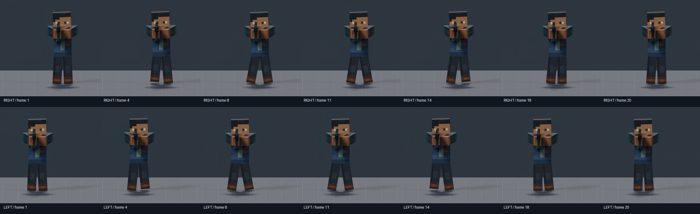
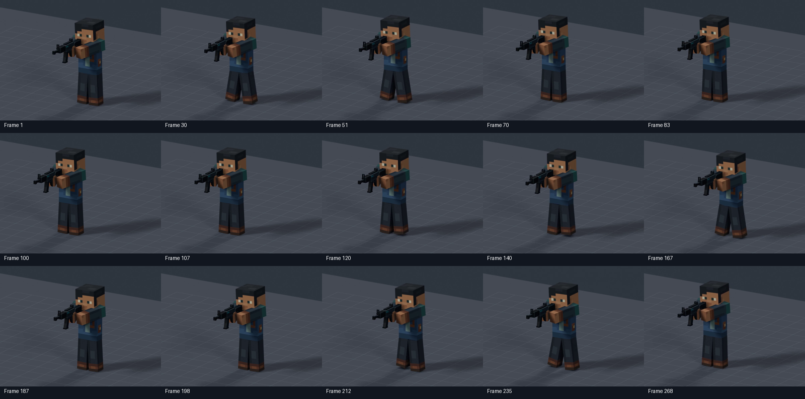

ARTISTIC STATUS: AWAITING HUMAN REVIEWR14 · Combat strafing
20-frame shuffle · 24 FPS · 0.833 seconds · unchanged rifle-ready arm/weapon pose.
Character right is screen-left in the front view. The orange enemy marker is visible in the elevated view.
A · Existing walk, travelling sideways
Original Walk lower-body pose at its native cadence.
B · Combat Strafe Right
RIGHT leads → LEFT follows.
C · Combat Strafe Left
LEFT leads → RIGHT follows.
All three parents travel at 0.192 m/s. Each clip contains 80 frames. Replay resets the finite travel path; the authored leg cycles themselves are seamless.
Continuous · Right → Stop → Left → Right
24 FPS / 11.17 seconds. Gait phase and parent speed ease together; the reversal brakes through double support. No instantaneous direction switch.
Measured motion
| Check | Right | Left |
|---|
| Maximum torso/Hips relative yaw | 1.300° | 1.300° |
| Lead / trailing swing | R: 1–8 / L: 11–18 | L: 1–8 / R: 11–18 |
| Hips bounce / lateral shift | 14 mm / ±10 mm | 14 mm / ±10 mm |
| Minimum floor clearance | 2.87 mm | 2.87 mm |
The continuous sequence also remains under 1.300° relative yaw. Checks sample every 1/8 frame, including blends. Hips yaw is ±2°; inherited chest yaw stays within ±0.959°. The Spine supplies a small eased counterbalance. Head and weapon retain the ready pose.
Rig limitation: rigid single-bone legs cannot flex knees or articulate soles. The study uses small FK leg translations (up to 36.7 mm), allowing minor hip seam changes. Lateral planted-foot drift is under 0.08 mm; forward/back sole drift reaches 13.6 mm as the rigid legs turn. Foot clearance peaks at 41 mm. These are study compromises for human review, not artistic approval.
Foot sequence

Stop and reversal samples

Full report · Numerical validation · Video decode checks